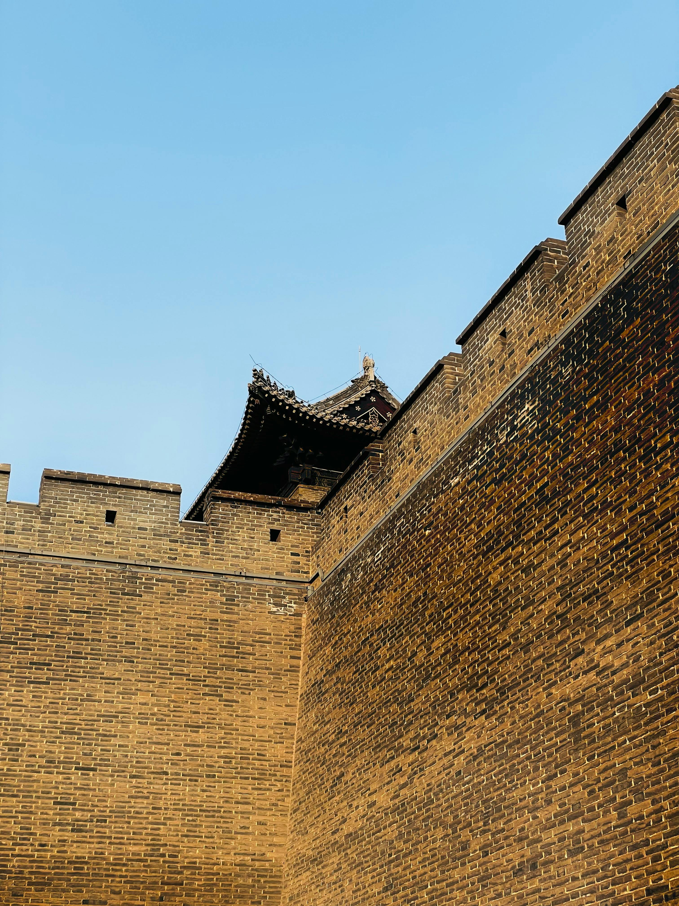
Construction
Utilisation de coffrages en bois pour la terre battue et de systèmes de rampes pour acheminer les blocs de pierre sur les crêtes escarpées.
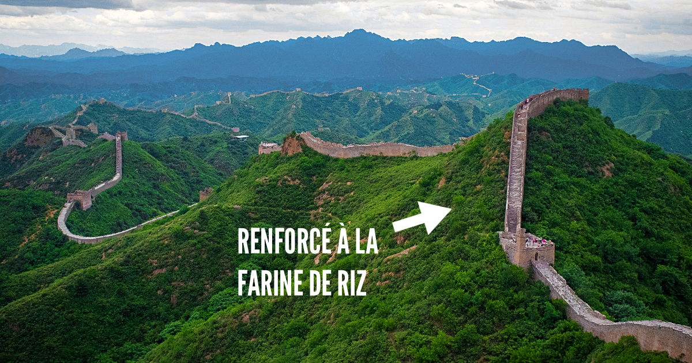
Matériaux
Un mélange local de granit, de briques cuites et de mortier au riz gluant, garantissant une résistance millénaire face à l'érosion.
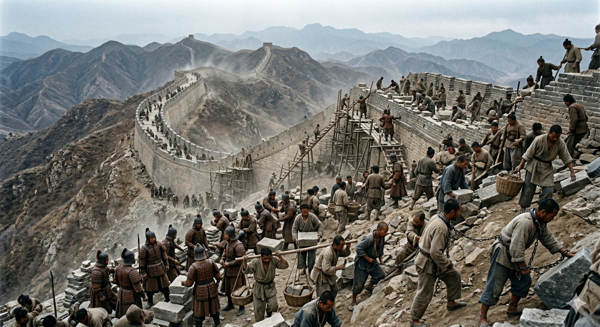
Travailleurs
Un effort colossal mobilisant soldats, paysans et prisonniers, travaillant dans des conditions extrêmes pour protéger l'Empire.
Frise chronologique des dynasties
~2070-1600 av. J.-C. — Premières fortifications et contrôle territorial.
XIA
~2070 av. J.-C.
~1600-1046 av. J.-C. — Premiers murs en terre battue autour des cités royales.
SHANG
~1600 av. J.-C.
~1046-256 av. J.-C. — Remparts entre États rivaux, prémices de la Grande Muraille.
ZHOU
~1046 av. J.-C.
481-221 av. J.-C. — États féodaux en guerre, fortifications multiples.
ROYAUMES
481 av. J.-C.
221-206 av. J.-C. — Unification par Qin Shi Huang. Première Grande Muraille continue.
QIN
221 av. J.-C.
206 av. J.-C. - 220 ap. J.-C. — Extension vers l'ouest, protection de la Route de la Soie.
HAN
206 av. J.-C.
618-907 — Période de paix relative. Diplomatie privilégiée sur la fortification.
TANG
618 ap. J.-C.
960-1279 — Renforcement des défenses face aux invasions du Nord.
SONG
960
1271-1368 — Les Mongols contrôlent l'empire. Construction suspendue.
YUAN
1271
1368-1644 — Âge d'or de la construction. Briques, tours de guet massives.
MING
1368
Classée UNESCO en 1987. Symbole mondial de la Chine.
AUJOURD'HUI
2026
Dynasties clés de la Grande Muraille
~2070-1600 av. J.-C.
Dynastie Xia
Dynastie Xia
Première dynastie légendaire de Chine. Les premiers travaux de drainage posent les bases du contrôle territorial.
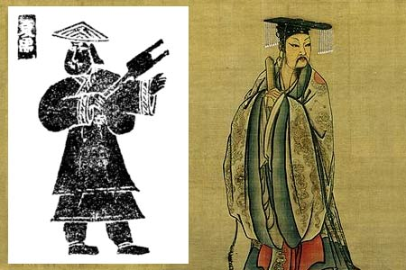
~1600-1046 av. J.-C.
Dynastie Shang
Dynastie Shang
Premières fortifications en terre battue pour protéger les cités royales. Début de l'organisation défensive du territoire chinois.
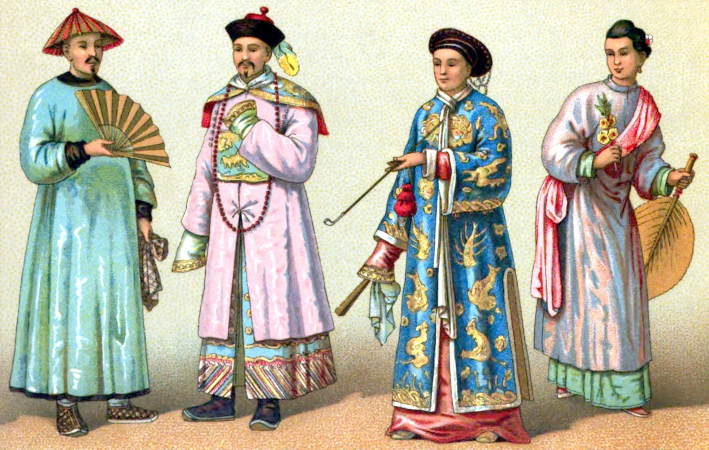
~1046–256 av. J.-C.
Dynastie Zhou
Remparts entre États rivaux
Sous les Zhou, les seigneuries multiplient les murs frontaliers entre États concurrents. Ces remparts régionaux dispersés sont les véritables ancêtres de la Grande Muraille.
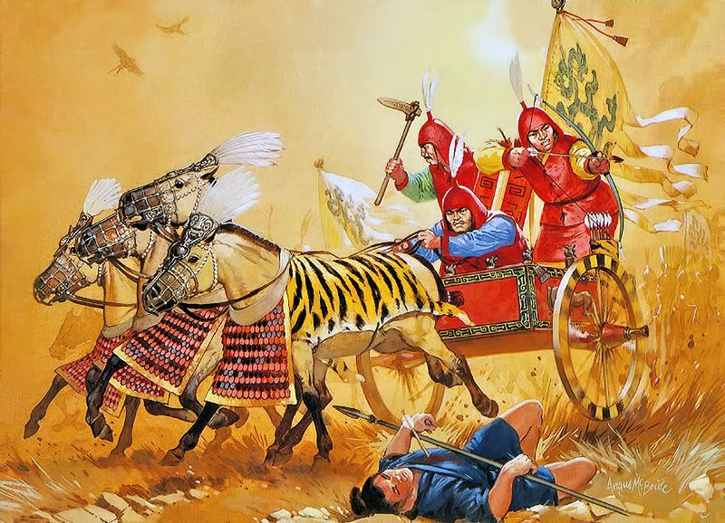
481-221 av. J.-C.
États féodaux
Période des Royaumes Combattants
Premières fortifications fragmentées érigées par les États féodaux pour marquer leurs frontières.

221-206 av. J.-C.
Dynastie Qin
Dynastie Qin
Unification des remparts par le premier Empereur pour créer une barrière continue contre les incursions du Nord.
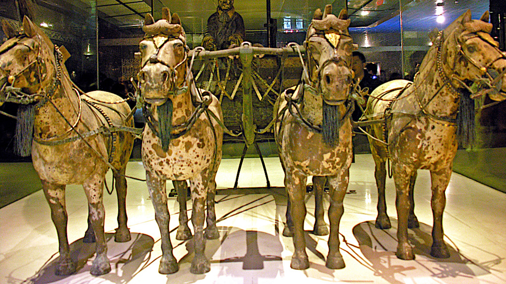
206 av. J.-C. - 220
Dynastie Han
Dynastie Han
Extension de la muraille vers l'ouest jusqu'aux déserts du Gobi. Protection des routes commerciales de la Route de la Soie.

618 - 907
Dynastie Tang
Dynastie Tang
Période de relative paix aux frontières. Les Tang privilégient la diplomatie sur la fortification, mais entretiennent les sections existantes.
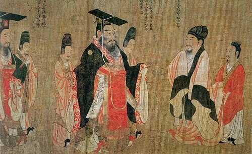
960 - 1279
Dynastie Song
Dynastie Song
Confrontés aux invasions du Nord, les Song renforcent les défenses et innovent dans les techniques de construction des fortifications.
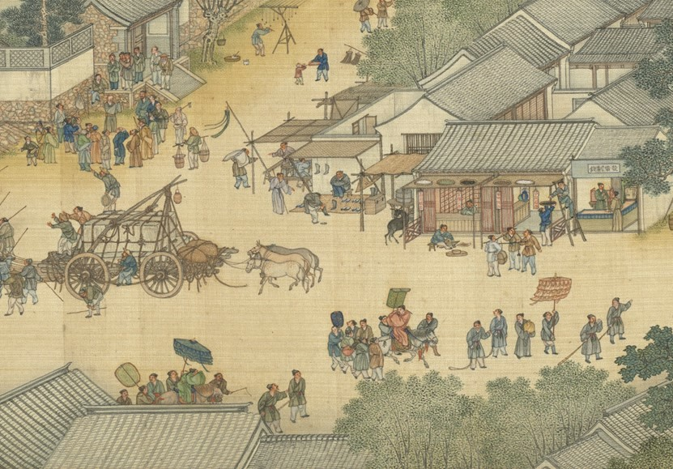
1271 - 1368
Dynastie Yuan
Dynastie Yuan
Les Mongols, maîtres de l'empire, n'ont pas besoin de la muraille pour se défendre. La construction est suspendue mais les structures sont préservées.
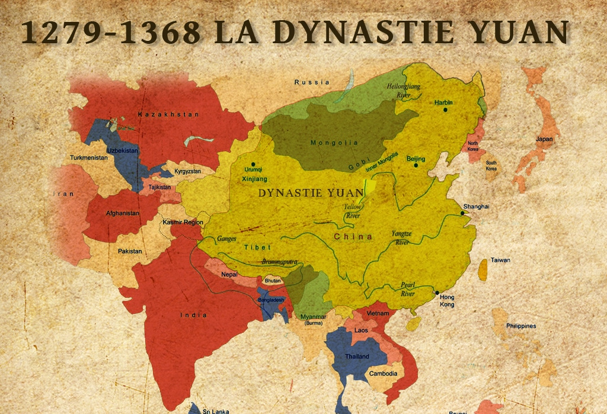
1368 - 1644
Dynastie Ming
Dynastie Ming
Âge d'or de la construction. La muraille se pare de briques et de tours de guet pour devenir le monument majestueux actuel.
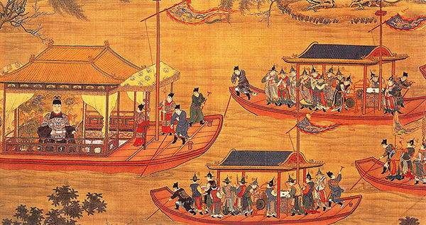
XXIe siècle
Aujourd'hui
Ère Moderne
Passage de rempart militaire à trésor mondial. Classée à l'UNESCO, elle est aujourd'hui le symbole universel de la Chine.